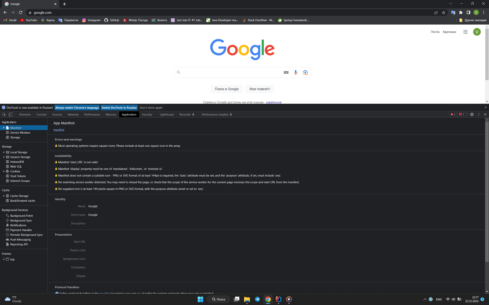
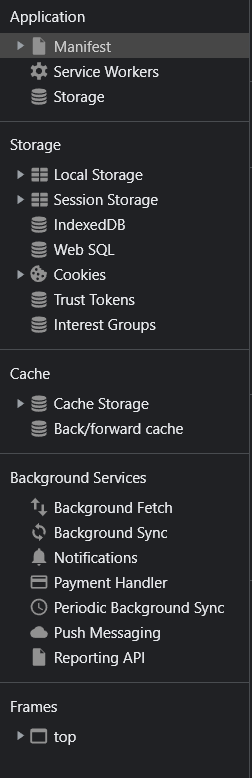
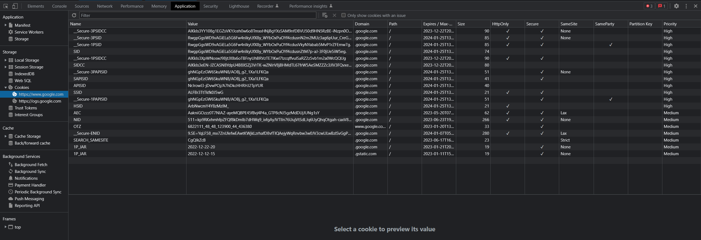

Чтобы разобраться с куки сначала перейдём на сайт google.com и откроем вкладку Application в dev tools:
Здесь хранятся все данные, которые хранятся на стороне клиента. Т.е. что хранит браузер у себя для каждого из сайтов. По сути, тут есть какие-то данные, которые требуется хранить на стороне клиента, например идентификатор доступа, какие-то закэшеированные данные и прочее.
В данном случае, в левой панели мы так же можем заметить эти хранилища:
К session storage можно легко достучаться используя JS. Есть всякие базы данных, так же есть и куки. Откроем их:
Куки - это тоже данные, которые хранятся на стороне клиента и главный из них - это название (Name) и его значение (Value). Есть так же дополнительные поля, такие как домен (Domain), путь (Path), время жизни куки (Expires/Max-Age), размер (Size). Названий много, но главное название и значение, который используется как клиентом, так и сервером.
Идёт общение между клиентом и сервером, и клиент просто отправляет запрос серверу, и сервер возвращает ответ.
Что делает клиент:Cookie и беря самые
важные поля: name1=value1; name2=value2, перечисляя их через точку с запятой.
Т.к. у нас нет ничего кроме заголовка header & body, логично предположить, что куки нужно как-то
отправлять. Поэтому, cookie - это обычный header с название cookie.
Напоминание: протокол HTTP не чувствителен к регистру своих заголовков, но в HTTP/2 принято использовать
заглавные буквы для именования заголовков.
Далее, на стороне сервера мы можем извлечь эти куки, потому что это обычный заголовок. Но самое интересное это то,
как они получаются на стороне сервера, а всё довольно просто - сервер может их установить для клиента. И для этого
он в ответе должен отправить соответствующий заголовок, который называется Set-Cookie и опять
разделяем через точку с запятой все значения этих кук. Главное понимать, что для каждого из кук мы должны
установить свой заголовок Set-Cookie.